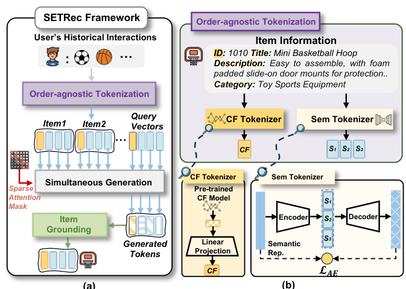

Order-agnostic Identifier for Large Language Model-based Generative Recommendation (面向大模型生成式推荐的无序标识符)
- 会议/期刊: SIGIR 2025
- 作者与机构: Xinyu Lin, Haihan Shi, Wenjie Wang, Fuli Feng, Qifan Wang, See-Kiong Ng, Tat-Seng Chua（NUS / USTC / Meta AI）
- 推荐链路定位: 端到端生成式（生成式召回）
- 研究方向: 生成式推荐与离散语义ID / 大语言模型推荐
- 论文原文: https://arxiv.org/abs/2502.10833v2
- 开源代码: https://github.com/Linxyhaha/SETRec
TL;DR (1分钟核心速览)
LLM 生成式推荐中，物品标识符设计存在两难：token 序列标识符（TIGER/LETTER）受束搜索局部最优与逐 token 串行生成拖累，单 token 标识符（E4SRec）又丢失 CF 或语义信息。本文提出无序集合标识符范式：每个物品由 1 个 CF token + \(N\) 个语义 token 组成的无序集合表示，配合稀疏注意力掩码与查询向量引导实现一次前向同时生成全部 token。在 4 个数据集、T5 与 Qwen(1.5B–7B) 上，全库排序 Recall@10 相对最优基线提升约 40%–60%，推理提速 8–18 倍。
Background & Motivation (背景与核心矛盾)
- 主流范式: LLM 生成式推荐将用户历史转为标识符序列，自回归生成下一物品标识符；标识符分两支——离散 token 序列（RQ-VAE 码本、层级聚类）与单 token 连续嵌入（ID 或语义）。
- 前人局限: ① token 序列标识符存在束搜索局部最优：目标物品首 token 概率低，早期即被剪枝（图 1），且逐 token 串行调用 LLM 推理开销不可接受；② 单 token 标识符中，ID 嵌入依赖充分交互、长尾失效，语义嵌入则完全丢失 CF 协同信号。
- 核心洞察 (Key Insight): 多维度信息（CF 与语义）之间本无先后依赖（如"价格"与"类别"），强行排成有序序列既引入虚假依赖又制造局部最优；若去掉 token 间依赖，则可并行生成。
- 本文切入点: 将物品表示为无序 token 集合，用稀疏掩码切断物品内 token 可见性，用可学习查询向量区分维度，实现"集合级"同时生成与可扩展的语料库接地。
Method (核心方法设计)
1. 整体框架 (Overall Architecture)
SETRec 分两段：离线分词阶段用预训练 SASRec 产出 CF 嵌入、用统一自编码器（AE）将 SentenceT5 语义表示编码为 \(N\)个无序语义嵌入，拼成集合标识符\(\tilde{i}=\{\boldsymbol{z}_{\text{CF}},\boldsymbol{z}_{S_1},\dots,\boldsymbol{z}_{S_N}\}\)，并汇总各维度 token 语料\(\mathcal{Z}_k\)作为接地头；在线生成阶段将用户历史展平为标识符序列，经稀疏注意力掩码编码后，由\(N+1\) 个可学习查询向量引导 LLM 一次前向同时输出各维度 token，再分别与对应语料做内积并线性融合打分排序。
flowchart TD
A["用户历史物品序列 + 物品元信息"] --> B["CF Tokenizer (SASRec) / 语义 Tokenizer (AE)"]
B --> C["无序集合标识符 {CF, S1..SN}"]
C --> D["稀疏注意力掩码编码历史"]
D --> E["查询向量引导同时生成各维度 token"]
E --> F["token 语料接地 + 线性融合打分"]
2. 关键设计拆解 (Key Designs)
-
无序集合分词（CF + 多语义 token）：单语义嵌入压缩多维语义易致嵌入坍缩，故用统一 AE 编码为 \(N\)个语义 token，仅增加约\(1/N\)参数并避免多编码器训练不稳；训练目标为重构损失\(\mathcal{L}_{AE}=\|\boldsymbol{s}-\hat{\boldsymbol{s}}\|_2^2\)。CF token 由 SASRec 嵌入经线性投影对齐 LLM 隐维，保证热物品精度；语义 token 保证冷启动物品的泛化。
-
查询引导同时生成 + 稀疏注意力掩码：为让 LLM 区分维度并一次生成，为每个维度 \(k\)配可学习查询向量\(\boldsymbol{q}_k\)，输出\(\hat{\boldsymbol{z}}_k=\text{LLM\_Layers}(\boldsymbol{x},\boldsymbol{q}_k)\)；历史编码时用稀疏掩码令同一物品内 token 互不可见、仅可见前序物品全部 token，从而消除虚假顺序依赖。该扁平化输入将批量生成复杂度从\(M^3L^2d\)降至\(M^2L^2d\)（\(M\)为维度数、\(L\) 为历史长度），这是 8–18 倍加速的来源。
-
训练目标、接地与推理：生成损失为维度内对比式 softmax \(\mathcal{L}_{Gen}=-\frac{1}{|\mathcal{D}|}\sum_{\mathcal{D}}\sum_{k\in\mathcal{F}}\frac{\exp(\text{sim}(\hat{\boldsymbol{z}}_k,\boldsymbol{z}_k))}{\sum_{\boldsymbol{z}\in\mathcal{Z}_k}\exp(\text{sim}(\hat{\boldsymbol{z}}_k,\boldsymbol{z}))}\)， 总损失 \(\mathcal{L}=\mathcal{L}_{Gen}+\alpha\mathcal{L}_{AE}\)。由于各维度 token 组合数\(\prod_k|\mathcal{Z}_k|\gg|\mathcal{I}|\)，采用语料库接地而非组合枚举：\(s_k=W_k\hat{\boldsymbol{z}}_k\)，\(s=(1-\beta)s_{\text{CF}}+\beta\sum_{k\neq\text{CF}}s_k\)。接地头直接取自 token 语料，新物品只需分词即可扩展，天然支持冷启动；推理仅一次 LLM 前向，无自回归解码。
Experimental Setup & Evaluation Protocol (实验设置与评估协议)
- 数据集与预处理: 三个 Amazon 类目（Toys/Beauty/Sports）+ Steam，均含标题、描述、类别等文本元信息；按时间戳排序后 8:1:1 比例划分；训练集出现过的物品记为 warm，否则为 cold。
| 数据集 | 领域 | 划分方式 | 特征/场景说明 |
|---|---|---|---|
| Toys | 电商玩具 | 8:1:1 时间序 | 标题/描述/类别/品牌 |
| Beauty | 美妆 | 8:1:1 时间序 | 同上 |
| Sports | 运动户外 | 8:1:1 时间序 | 同上 |
| Steam | 视频游戏 | 8:1:1 时间序 | 丰富文本语义 |
- 排名评测协议: Full-Ranking 全库排序（对全部物品打分），指标 Recall@{5,10}、NDCG@{5,10}，并分 All / Warm / Cold 三种物品集合分别汇报；显著性用单样本 t 检验（\(p<0.01\)）。
- 对比基线与超参: 单 token 类 DreamRec、E4SRec；token 序列类 BIGRec、IDGenRec、CID、SemID、TIGER、LETTER。骨干为 T5-small（全参微调）与 Qwen2.5-1.5B/3B/7B（LoRA）；AE 隐层 512/256/128 + ReLU；\(N\in\{1..6\}\)、\(\alpha\in\{0.1..0.9\}\)、\(\beta\in\{0..1\}\) 网格搜索。
Key Experimental Results (实验关键数据)
1. 主实验对比 (Main Results)
T5 骨干，All 设置（节选核心指标，括号内为相对次优基线提升）：
| 数据集 | 方法 | R@5 | R@10 | N@10 | 推理耗时(s) |
|---|---|---|---|---|---|
| Toys | LETTER | 0.0081 | 0.0117 | 0.0077 | 448 |
| Toys | TIGER | 0.0064 | 0.0106 | 0.0076 | 448 |
| Toys | E4SRec | 0.0061 | 0.0098 | 0.0064 | 55 |
| Toys | SETRec | 0.0110 | 0.0189 | 0.0118 | 60 |
| Improv. | +35.8% | +61.5% | +53.2% | — | |
| Beauty | LETTER | 0.0071 | 0.0103 | 0.0070 | 430 |
| Beauty | SETRec | 0.0106 | 0.0161 | 0.0103 | 126 |
| Improv. | +49.3% | +56.3% | +47.1% | — | |
| Sports | SemID | 0.0094 | 0.0167 | 0.0114 | 2367 |
| Sports | SETRec | 0.0114 | 0.0185 | 0.0126 | 136 |
| Improv. | +21.3% | +10.8% | +10.5% | — | |
| Steam | TIGER | 0.0202 | 0.0348 | 0.0287 | 1747 |
| Steam | SETRec | 0.0216 | 0.0383 | 0.0308 | 347 |
| Improv. | +6.9% | +10.1% | +7.3% | — |
Qwen-1.5B 上 SETRec 在 Toys 全库 R@10 达 0.0188（次优 TIGER 0.0117），冷启动物品 R@10 达 0.0883（次优 TIGER 0.0715），推理较 token 序列方法平均提速约 20 倍。
2. 消融实验 (Ablation Study)
Toys 数据集，T5 骨干，Recall@10：
| 变体 | All | Warm | Cold |
|---|---|---|---|
| SETRec 完整 | 0.0189 | 0.0236 | 0.0812 |
| w/o Sem（去语义 token） | 显著下降 | 下降 | 大幅下降 |
| w/o CF（去 CF token） | 下降 | 下降 | 下降（T5） |
| w/o Query（随机冻结查询向量） | 下降 | 下降 | 下降 |
| w/o SA（改回原始注意力掩码） | 下降 | 下降 | 下降 |
3. 关键实验发现 (Key Findings)
- 语义 token 是冷启动主力：去掉语义 token 后冷启动物品 Recall@10 跌幅最大，且 w/o Sem 比 w/o CF 更伤，说明多语义 token 承载了区分物品的关键多维信息；而 Qwen 上 w/o CF 反而在冷启动物品上略有增益，暗示大模型参数内已含更强语义先验、CF 贡献被稀释。
- 稀疏掩码与查询向量缺一不可：w/o SA 与 w/o Query 均造成全场景下降，验证"去 token 依赖"与"维度区分引导"是同时生成可行的两个必要条件；同时稀疏掩码把复杂度从 \(M^3L^2d\)降到\(M^2L^2d\)，是效率收益的直接来源。
- 稀疏物品收益更大、冷启动随规模扩展：按流行度分桶 G1→G4，SETRec 相对 E4SRec/LETTER 的提升在 G2–G4 更显著；Qwen 从 1.5B→7B，冷启动物品 R@10 由 0.0883 升至 0.1016，而热物品基本持平（0.0236→0.0239），说明模型扩容主要增强语义理解而非 CF 建模。
Highlights & Limitations (亮点、对比与审稿批判)
- 与代表作对比 (vs. Prior Work): 相比 TIGER/LETTER 的 RQ-VAE 有序码本，本文彻底放弃 token 顺序与自回归解码，把"多维度信息"从序列结构转为集合结构；相比 E4SRec 的单嵌入接地，本文保留多 token 表达力且接地头可扩展至新物品；与同期集合标识符工作（如 LC-Rec 类）相比，本文真正切断了 token 依赖并实现单次前向同时生成。
- 可迁移亮点: ① "稀疏掩码 + 可学习查询向量"可迁移到任何需要多字段并行解码的生成式检索/多任务生成场景；② 用语料库作接地头替代组合枚举，是解决"组合爆炸 vs 有效物品"矛盾的通用技巧。
- 审稿级局限批判: ① 语义 token 为连续嵌入而非离散码，无法直接复用 LLM 原生词表，需额外 AE 与投影层，跨模型迁移成本高；② 接地依赖各维度语料库内积，物品规模极大时接地头存储与打分开销线性增长，论文未给出千万级物品的实测；③ 冷启动物品指标绝对值偏高源于冷物品数量少，跨数据集可比性需谨慎解读。
Rating (四维评分)
- 方法创新性 (Novelty): ⭐⭐⭐⭐ （"无序集合标识符"范式直击束搜索局部最优与串行低效两大痛点，原则提炼清晰，但组件本身多为已有模块的组合创新）
- 评估协议与实验扎实度 (Protocol & Experiments): ⭐⭐⭐⭐ （4 数据集 × 2 架构 × 3 规模，Full-Ranking + warm/cold/流行度分桶 + 效率与显著性检验齐全，唯缺线上 A/B 与超大规模物品验证）
- 写作与数学规范度 (Clarity & Rigor): ⭐⭐⭐⭐ （两条设计原则贯穿全文，复杂度分析给出 \(M^3L^2d\to M^2L^2d\) 的明确推导，符号统一；部分公式排版略密）
- 工业落地与复现价值 (Industrial & Practical Value): ⭐⭐⭐⭐⭐ （代码开源，单次前向带来 8–20 倍推理加速，接地头可增量扩展新物品，对生成式召回线上部署极具吸引力）